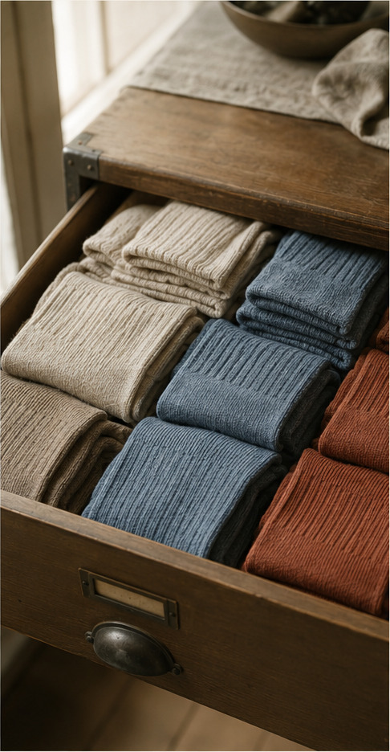

JOURNAL 04
Dress Sock Field Notes
Why the dress sock remains adaptable across seasons and wardrobes.

Start with real use
Sock choice becomes easier to understand when visible style is separated from the decisions beneath it. Fit influences movement, fabric controls warmth and breathability, and construction determines how a sock behaves over time. No single approach is universally best. The useful question is how those elements work together for a particular wearer, climate and routine.
Begin with real conditions. Consider the shoe type, daily activity, temperature and preferred cushioning. A clear picture of daily use prevents technical specifications from becoming an abstract contest. It also makes comparison more honest and keeps a dramatic-looking piece from being chosen for the wrong season.
Proportion deserves close attention. Cuff tension establishes hold, heel placement prevents bunching, and toe room protects comfort through a full day. A fine dress sock needs less bulk than a cushioned walking or lounge sock. Whenever possible, try socks with the shoes you actually expect to wear.
Understand the trade-offs
Construction is both practical and expressive. Ribbed socks hold gently, terry loops add cushioning, smooth knits reduce bulk, and reinforced heels improve durability. Complexity can be useful, but extra features also add weight and maintenance. The best design is the one whose details support a genuine need.
Materials shape character, comfort and care. Wool can regulate temperature and recover from wear, cotton offers softness and easy care, bamboo blends can feel smooth, and modern synthetics can provide fast drying performance. Each option involves trade-offs in weight, breathability, durability and cleaning rather than a simple ranking.
Condition and transparency matter when buying vintage or pre-owned pieces. Ask for clear photographs of cuffs, heels, toes and high-friction areas. Check whether elastic has weakened or the knit has distorted and whether repairs are sound. Minor signs of careful wear can add context, but structural wear should be understood before purchase.
Care and long-term value
Care is usually straightforward: wash socks inside out, use a gentle cycle, allow wool pairs to air dry and store them clean and fully dry. Follow the care label and avoid frequent dry cleaning when simple airing will do. Compression and specialist performance socks may require manufacturer-specific care.
A thoughtful decision does not need to be fast. Compare a short list, revisit it after several days and notice which qualities continue to matter. A sock that works with your climate, feels comfortable and integrates with existing clothes will generally earn more wear than one selected only because it is prominent.
Finally, allow taste to develop. Preferences often change as you experience different cuff heights, fibres, cushioning levels and patterns. Learning is part of building a wardrobe, and restraint can make that process more satisfying. A useful socks collection is not necessarily large; every piece should have a clear reason to be worn.
This guide offers general educational information. For valuation, authentication or servicing, consult an appropriately qualified professional.